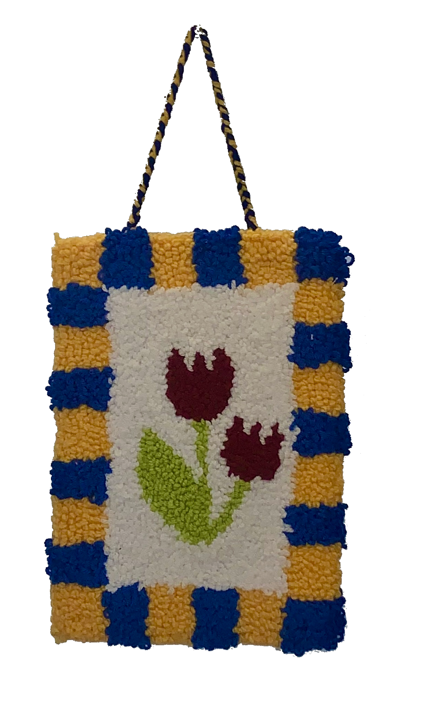

Abstract Wall Hanging
I was inspired by abstract continuous line drawings while making this wall hanging. Initially, I used it as a laptop mat!

1st Wall Hanging
I made this wall hanging for my mom. Her favorite flowers are red tulips. This rug took me about 10 hours to create!
